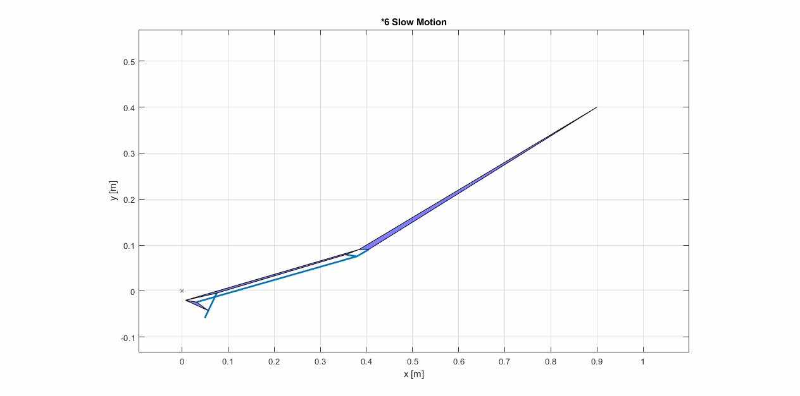
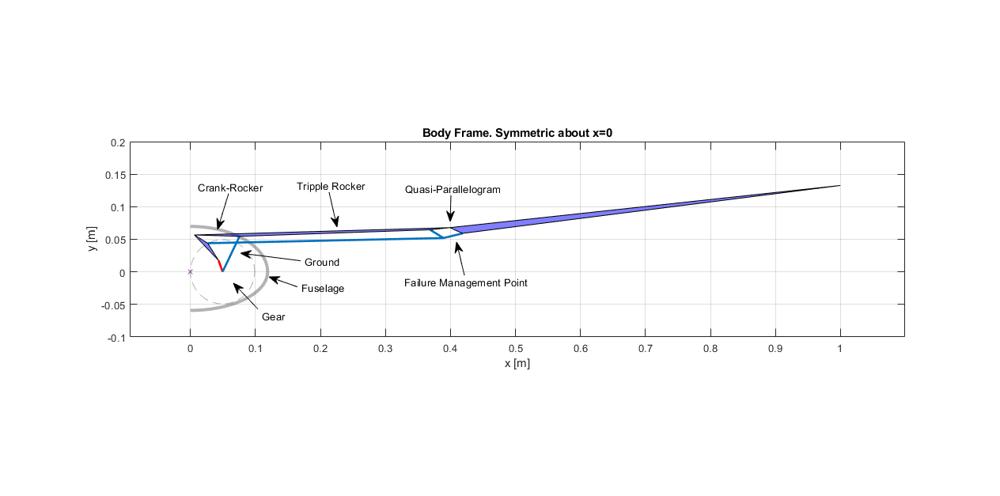
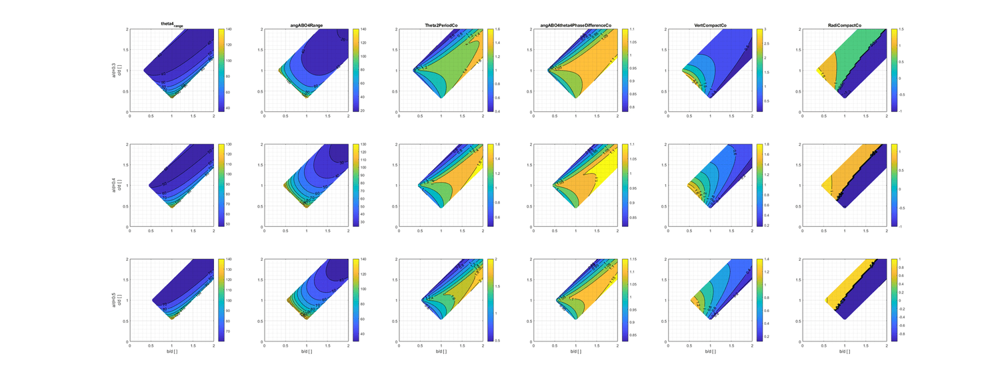

Ornithopter Linkage Synthesis

The up-and-down motion of ornithopter is calculated based on C. Altenbuchner’s case study
The synthesis process is as follows:
Actuators and Degrees of Freedom
Aerodynamicists’ publications suggest, flapping motion reaches maximum power efficiency at St=0.3, which is around 5Hz for my ornithopter. Existing ornithopters suggest operating power around 15~40W. Within above operating region, I have two choice: use one brushless DC motor and design an 1-DOF gearbox-mechanism system, or create 4-DOF system with four heavy servos. To save weight, I choose the former.
Planar or Spatial?
Spatial mechanism enables a more compact fuselage, thus reducing drag. However, spatial mechanism involves spherical joint and linear bearing. They are either too fricitional or too heavy. Thus, I decide to design planar mechanism with revolute joints.
How to Produce Cyclic Motion for Inner Wing?
To convert the one-way rotation of gear to up-and-down cyclic motion of inner wing, crank-rocker (CR henceforth) is the only choice.

For crank-rocker mechanism (CR): The red bar is the input. It rotates with gear. The 3-joint bar on the left is called coupler. The inner wing is fixed onto the output bar of CR. The “ground” means “ground link”. It is fixed on fuselage.
How to Produce Lag-Behind Motion for Outer Wing? (Really hard to describe)
The whole wing is semi-folded during upstroke and fully-unfolded during downstroke, thus requiring a phase difference between inner and outer wing. Such lag-behind motion can be achieved in three ways.
Plan A: construct a 5-bar linkage with 3 bars from CR;
Plan B: construct a 4-bar linkage with the ground bar and output bar from CR (notice that this configuration requires flipping the linkage each time when it go through its toggle position. Otherwise, the wing will always be either unfolded or semifolded);
Plan C: construct a 4-bar linkage with the coupler and output bar from the CR.
I choose Plan C for simplicity. Plan C also turned out to be the choice of FESTO.
What Else before Sizing?
Each test of ornithopter will end with a crash, but I don’t want central mechanism to break. I want failure to happen at peripheral structure before any impact load had chance to break central mechanism. So I add a quasi-parallelogram with low a safety factor. If later I figure out a better way of failure management, I will remove the quasi-parallelogram.

4-bar linkage has only three design variables: a/d, b/d, c/d. They are bar length normalized by ground link.
Preliminary Sizing
The flapping motion is determined mainly by the crank-rocker satge. The kinematic properties of my interest, such as range of motion, compactness, lag-behand effect can be calculated in a computational-efficient way. Thus, I use MATLAB to sweep over 7,500 crank-rocker sizing and output their properties. Since 4-bar linkage has only 3 dimensionless design parameter, thus I can easily visualize the design sweep with contour plot and eyeball it. Balancing different kinematic properties gives the preliminary sizing of crank rocker.
Acknowledgement:
FREUDENSTEIN, FERDINAND. DESIGN OF FOUR-LINK MECHANISMS. ProQuest Dissertations Publishing, 1954.
Platzer, Max F, et al. “Flapping Wing Aerodynamics: Progress and Challenges.” AIAA Journal, vol. 46, no. 9, American Institute of Aeronautics and Astronautics Inc, 9/2008, pp. 2136–49, doi:10.2514/1.29263.
Taylor, G. K., Nudds, R. L., and Thomas, A. L. R., “Flying and Swimming Animals Cruise at a Strouhal Number Tuned for High Power Efficiency,” Nature (London), Vol. 425, Oct. 2003, pp. 707–711. doi:10.1038/nature02000
Altenbuchner, Cornelia, et al. “Free Flight Validation of a Flexible-Multi-Body Structural Dynamics Model of a Bioinspired Ornithopter.” 51st AIAA Aerospace Sciences Meeting Including the New Horizons Forum and Aerospace Exposition 2013, 2013.
W. Send, M. Fischer, K. Jebens, R. Mugrauer, A. Nagarathinam, and F. Scharstein, “Artificial hinged-wing bird with active torsion and partially linear kinematics,” in 28th International Congress of the Aeronautical Sciences, Gottingen, Germany ¨ , 2012
JSK-koubou. https://jisaku-koubou.com/archives/category/%e9%b3%a5%e5%9e%8b%e3%83%89%e3%83%ad%e3%83%bc%e3%83%b3%e4%bd%9c%e8%a3%bd%e8%a8%98%e9%8c%b2